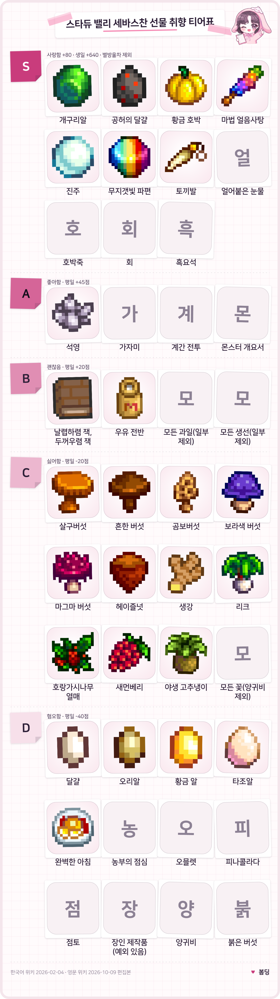
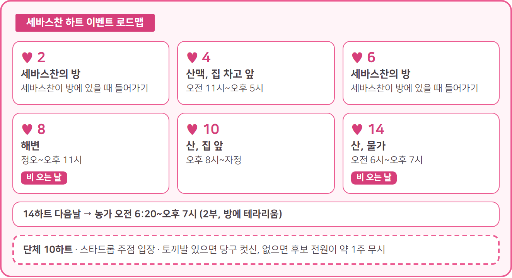

스타듀밸리 세바스찬 호감도 공략 선물 티어표와 하트 이벤트 조건
스타듀 밸리에서 세바스찬한테 뭘 줘야 할지 막막하셨던 분들 많으시죠. 세바스찬은 생일이 겨울 10일이고, 세바스찬 정보상자에 적힌 사랑 선물은 호박죽 · 회 · 개구리알 · 흑요석 · 얼어붙은 눈물 · 공허의 달걀 여섯 가지예요. 알렉스가 좋아하던 완벽한 아침이나 달걀은 세바스찬에겐 혐오 선물이라, 알렉스 공략 그대로 줬다간 점수만 깎이거든요.
✔ 스타듀 밸리 같이 보기 좋은 내용
· 스타듀밸리 알렉스 호감도 공략 선물 하트 이벤트 조건 총정리
세바스찬 프로필 화면 — 생일 겨울 10일
세바스찬 기본 정보 한눈에, 하트 한 칸은 250점이에요
세바스찬은 산맥 산악로 24, 로빈 목공소 지하실에 사는 프리랜서 프로그래머이고 결혼 후보 12명 중 한 명이에요.
| 항목 | 내용 |
|---|---|
| 생일 | 겨울 10일 |
| 가족 | 엄마 로빈, 이부 동생 마루, 새아버지 드미트리우스 |
| 절친 | 샘 |
| 취미 | 컴퓨터 게임, 만화책, 공상과학 소설 |
하트 한 칸은 우정 점수 250점이에요. 세바스찬은 엄마와 새아버지가 이부 동생 마루를 더 챙긴다고 느끼고, 담배 피우는 습관도 대사에 슬쩍 나와요.
세바스찬 선물 취향 티어표, 생일엔 효과가 8배예요
표는 평일 점수 기준이고 생일엔 8배예요. 저라면 사랑 선물부터 챙길 것 같아요.

세바스찬 선물 취향 티어표 — S 사랑함부터 D 혐오함까지 (대표 아이템만, 묶음 규칙은 본문 참조)
티어표: Stardew Valley Wiki(CC BY-NC-SA) 데이터 기반 봄딩 제작 · 게임 속 아이콘 저작권은 ConcernedApe
- S 사랑함(+80점) 호박죽은 호박과 우유 하나씩, 회는 아무 생선 한 마리로 요리하고 흑요석은 마그마 정동석이나 전 정동석에서 나와요. 누구나 사랑하는 황금 호박·마법 얼음사탕·진주·무지갯빛 파편·토끼발도 여기 들어가요(한국어 위키 우정 문서).
- A 좋아함(+45점) 석영·가자미·계간 전투·몬스터 개요서이고, 누구나 좋아하는 선물도 대체로 여기예요. 단 꽃, 완벽한 아침, 농부의 점심, 오믈렛, 피나콜라다와 커피·녹차·기름 외 장인 제작품은 빠져요.
- B 괜찮음(+20점) 책 '날렵하렴 잭, 두꺼우렴 잭'과 우유 전부, 과일(과수 열매·새먼베리 제외), 생선(잉어·가자미·달팽이 제외)이에요. 누구나 평범하게 여기는 선물도 대체로 여기예요.
- C 싫어함(−20점) 꽃은 양귀비만 빼고 전부 싫어해요. 표에 못 담은 수선화·민들레·눈마·겨울뿌리와 생강·리크·호랑가시나무 열매·야생 고추냉이·새먼베리·헤이즐넛, 버섯 다섯 가지(살구버섯·흔한 버섯·곰보버섯·보라색 버섯·마그마 버섯)도 여기예요. 누구나 싫어하는 선물도 대부분 해당돼요.
- D 혐오함(−40점) 완벽한 아침·농부의 점심·오믈렛·피나콜라다·점토가 여기예요. 달걀·오리알·황금 알·타조알도 혐오지만 공허의 달걀만은 사랑이에요. 장인 제작품은 커피·녹차·기름만 빼고 혐오이고, 붉은 버섯·양귀비·잉어·달팽이 같은 보편 혐오 선물도 −40점이에요. 개구리알은 장신구, 공룡알은 유물이라 달걀 혐오 규칙과는 별개예요(유물이라 점수가 깎이는 건 같아요).
품질 별이 붙는 사랑·좋아함 선물은 은 ×1.1, 금 ×1.25, 이리듐 ×1.5배예요. 별방울차도 세바스찬이 사랑하지만, 영문 위키 기준으로는 누구에게 줘도 250점 고정이고 주 2회 한도에도 안 걸려서 표에선 뺐어요.
| 구분 | 사랑함 | 싫어함 |
|---|---|---|
| 영화 | 빗속의 울부짖음, 미스테리움 | 용감한 작고 어린 나무, 주주 시티 급행열차, 콜드스타 목장의 기적 |
| 간식 | 별방울 소르베, 자스민 차 | 검은 감초 사탕, 조자 콜라, 조자콘, 카푸치노 무스 케이크, 케일 스무디, 팡젤넬라 샐러드 |
나머지 간식은 전부 좋아해요.
생일 선물은 겨울 10일에 챙기는 게 좋아요
· 사랑 +640, 좋아함 +360, 괜찮음 +160이에요.
· 싫어함 −160, 혐오 −320이라 이날은 고르는 게 중요하답니다. 별방울차는 영문 위키 기준 750점이에요.
· 주 2회 한도와 별개로 줄 수 있어서 부담이 없어요~
세바스찬 하트 이벤트 조건, 2·4·6·8·10·14하트
세바스찬의 하트 이벤트는 2·4·6·8·10·14하트에 있고 단체 10하트가 따로 하나 더 있어요. 5·9·12하트엔 이벤트가 없어요(위키 목록 기준).

세바스찬 하트 이벤트 로드맵 — 2·4·6·8·10·14하트
로드맵 카드: Stardew Valley Wiki(CC BY-NC-SA) 데이터 기반 봄딩 제작
- 2하트 세바스찬이 방에 있을 때 들어가면 시작돼요. 일하던 세바스찬이 프로그래머라고 털어놓고, 아무도 자기 일을 진지하게 안 본다고 말해요.
- 4하트 오전 11시~오후 5시에 산맥으로 가면 차고에서 오토바이를 만지는 그를 볼 수 있어요.
- 6하트 방에 있을 때 들어가면 보드게임 솔라리온 연대기를 같이 해요. 직업은 뭘 골라도 최고 점수가 가능하고, 경로는 정문 → 스켈레톤과 싸운 뒤 방어 → 녹색 불빛 왼쪽 복도 → 캡슐 파괴 순이에요.
- 8하트 비 오는 날 정오~오후 11시에 해변으로 가면 우산을 같이 쓰게 돼요.
8하트 비 오는 날 해변 이벤트
- 10하트 오후 8시~자정에 산으로 가면 오토바이를 같이 타고 도시 전망 장소에서 보름달 아래 고백을 받아요.
- 14하트 비 오는 날 오전 6시~오후 7시에 산 물가로 가면 다친 개구리를 구해요. 다음날 오전 6:20~오후 7시에 농가에 들어가면 이어지고, 이후 방에 테라리움이 영구로 생겨요.
14하트 이벤트 뒤 테라리움
선택지가 우정 점수를 바꾸는지는 2·4하트가 영문 위키 기준 전부 영향 없고, 6하트 직업과 14하트도 영향이 없어요. 8하트는 선택지가 없고 10하트는 증감이 알려진 게 없어요. 8·14하트는 계절 상관없이 '비 오는 날'이면 돼요.
단체 10하트는 결혼 전에 모든 미혼 남성 후보에게 부케를 주고 전원 10하트를 채운 뒤 스타드롭 주점에 들어가면 시작돼요. 토끼발이 있으면 당구 컷신, 없으면 후보 전원이 약 1주 동안 무시하고 선물도 거절하니 챙기는 게 좋아요. 세이브당 한 번이고, 결혼했거나 시들은 부케·인어의 펜던트를 줬다면 안 나와요. 영문 위키엔 각자의 10하트 이벤트를 모두 본 뒤여야 한다는 조건도 있어요.
세바스찬 일정과 만나는 곳
세바스찬은 평소 오전 9시에 침대에 있다가 방 컴퓨터 앞에서 하루를 보내고 저녁에 집 옆 호수로 나와요. '출발' 시각엔 아직 이동 중이에요.
| 언제 | 어디 |
|---|---|
| 평소 | 오전 9시 침대 → 10:30 컴퓨터 → 오후 3시 부엌(3:30 방으로, 4:10 다시 컴퓨터) → 6:30 집을 나서 호수에서 담배 → 9:30 귀가 |
| 가을 평소 | 낮 12시 집 옆 호수 → 오후 2시 광산 입구 쪽 강가 → 3:30 다리 근처 강가 → 4시 부엌 → 6시 컴퓨터 |
| 비 오는 날 | 비 일정이 우선이고 둘 중 하나, ① 해변 → 오후 1:30 생선 가게 왼쪽 긴 부두 ② 오후 3시 출발 → 5:20부터 주점 아케이드 붉은 소파 옆 → 9:10 귀가 |
| 금요일 | 오후 3시 방에서 출발 → 5:20부터 주점에서 샘과 당구 → 9:10 귀가 |
| 토요일 | 오전 9시 샘의 집으로 출발 → 11:30 헤일리·에밀리네 집 앞 → 오후 1시 샘의 방 → 6:20 강가에서 샘과 담배 |
| 목요일 | 철로를 열면 오후 2시 출발 → 3시쯤 기차역에서 담배, 6:20엔 동쪽 터널 옆 |
특수한 날은 여름 4일 병원, 겨울 16일 야시장, 봄 15일 사막 축제(버스를 고쳤을 때)예요. 애비게일이 낮 12시~5시에 방에 놀러 오는 날(11일은 6하트 미만일 때, 15일)은 위키마다 사계절로 적힌 곳도, 봄에만 적힌 곳도 있어서 확실하진 않아요. 봄 15일은 사막 축제가 우선이에요.
호감도 올리는 순서와 청혼·결혼 준비
세바스찬 호감도는 사랑 선물을 주 2회 주고 이벤트를 하트 순서대로 보는 게 기본이고, 8하트에서 멈추면 부케가 열쇠예요.
호감도 올리는 순서
· 선물은 하루 한 번, 한 주 두 번이고 두 번을 채우면 일요일 아침에 +10점이 붙어요.
· 금요일 질문에서 만화책을 고르면 +30점, 쇼핑과 운동은 −30점이에요. 가을 금요일엔 공상과학·판타지가 +30점, 고전이나 '책 안 읽는다'는 −30점이에요.
· 피에르네 잡화점 밖 '구인구직' 게시판에 세바스찬의 요청이 올라오면 끝내서 우정 150점을 받을 수 있어요.
청혼까지 준비물
· 8하트 다음날 피에르의 편지가 오면 잡화점에서 부케를 200골드에 사서 건네면 돼요. 받으면 10하트까지 열려요.
· 10하트 다음날 루이스의 편지가 오면 인어의 펜던트를 살 차례예요. 비 오는 날 해변 조수 웅덩이 근처 늙은 선원이 5,000골드에 팔고, 집을 한 번 이상 업그레이드해 둬야 해요. 웅덩이는 엘리엇의 통나무집 동쪽 다리를 고쳐야 가요(나무 300개). 영문 위키에선 로빈의 두 번째 마을 업그레이드로도 갈 수 있다고 해요.
· 펜던트를 건네 청혼하면 3일 뒤 아침에 결혼식이에요. 결혼하면 하트가 14까지 늘어나요. 저라면 부케 200골드와 펜던트 5,000골드부터 미리 모아 둘 것 같아요.
결혼하면 세바스찬은 농가 침실 오른쪽 방으로 이사 오고, 농가 뒤에서 오토바이를 손봐요. 하루 종일 집에 있는 날 아침에는 커피를 줄 수 있고, 비 오는 날엔 동굴에서 찾았다며 흑요석이나 얼어붙은 눈물 같은 걸 건네요. 겨울 28일엔 새해 맥주도 준답니다.
농가 뒤에서 오토바이를 손보는 세바스찬
자주 묻는 질문
Q. 12.5하트가 되면 뭐가 나오나요?
배우자와 12.5하트가 되면 사랑의 표시로 무작위로 별방울 한 개를 받아요.
Q. 호감도가 오르는 속도를 늘릴 수 있나요?
영문 위키에선 Friendship 101이라는 책을 읽으면 모든 우정 증가가 10% 늘어난다고 해요. 한국어 이름은 몰라서 영문 그대로 적었어요.
Q. 결혼한 뒤 다른 남성 후보에게 선물하면 어떻게 되나요?
이미 부케를 받은 다른 남성 후보에게 혐오가 아닌 선물을 주면 20~40% 확률로 세바스찬이 질투해 우정이 30점 깎여요(영문 위키 기준). 생일 선물과 배달 퀘스트는 질투하지 않아요.
Q. 시들은 부케를 받으면 어떻게 되나요?
관계가 끝나고 하트가 5로 내려가요. 이혼은 50,000골드, 마녀 오두막에서 기억을 지우는 건 30,000골드예요.
Q. 대화를 안 하면 하트가 떨어지나요?
하트를 꽉 채운 상태가 아니라면 서서히 줄어요. 결혼한 뒤에도 서로 이야기를 안 하면 계속 줄어요.
호박죽과 회만 꾸준히 챙겨도 공략은 절반이에요. 14하트 뒤 테라리움까지 천천히 즐겨 보세요~
참고한 곳
· 위키(한국어) 세바스찬
· 위키(한국어) 결혼
· 위키(영문) Sebastian
· 위키(한국어) 우정
· 위키(영문) Friendship
· 위키(영문) Marriage